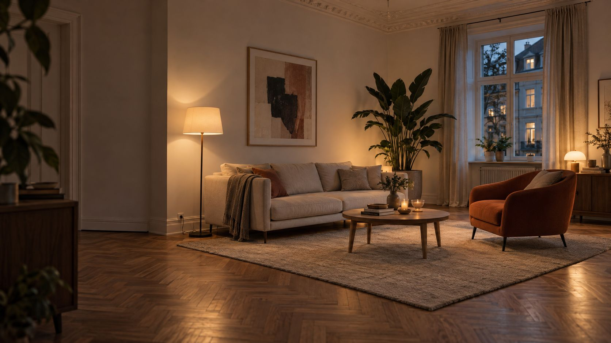
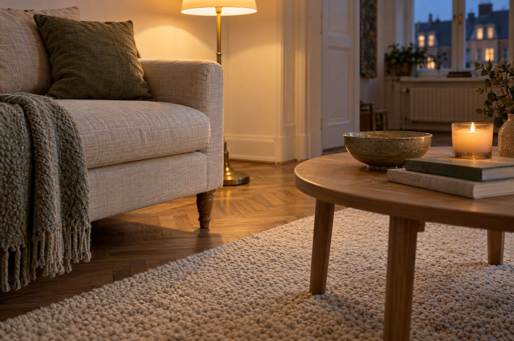

Wohnzimmer einrichten
Das Wohnzimmer muss viel können: Sofa, Fernsehen, Besuch, Lesen, manchmal Arbeiten. Mit ein paar Maßen findet alles seinen Platz, und der Raum wird ruhig und gemütlich.
Plane zwischen Möbeln und Wänden etwa 70 cm Laufweg ein und stell das Sofa 5 bis 10 cm vor die Wand, vor einem Heizkörper mindestens 20 cm. Der Couchtisch steht 40 bis 50 cm vor dem Sofa und ist halb bis zwei Drittel so lang, der Teppich 30 bis 50 cm breiter als das Sofa. Mindestens drei Lichtquellen auf verschiedenen Höhen machen das Wohnzimmer gemütlich.
Die wichtigsten Maße.
Richtwerte, mit denen sich das Wohnzimmer bequem anfühlt.
Der Wohnzimmer-Check.
Gib dein Sofa, deinen Raum und deinen Fernseher ein. Du bekommst die passenden Maße auf einen Blick.
Mit Zeichnung rechnen das der Teppich-Rechner, der Couchtisch-Rechner und der Fernseher-Rechner. Wie viele Leuchten das sind, zeigt der Lumen-Rechner.
In sechs Schritten zum Wohnzimmer.
Erst messen, dann kaufen
Zeichne den Raum auf Kästchenpapier: Türen, Fenster, Heizkörper und Steckdosen. So siehst du, wo Laufwege nötig sind und wo Möbel hinpassen.
Die Mitte festlegen
Jedes Wohnzimmer braucht einen Blickfang: Fenster, Kamin, Regalwand oder Fernseher. Die Sitzgruppe richtet sich danach aus.
Das Sofa stellen
Mit 5 bis 10 cm Abstand zur Wand, damit Luft zirkuliert und kein Schimmel entsteht. Vor einem Heizkörper mindestens 20 cm. In großen Räumen darf das Sofa frei im Raum stehen und den Wohnbereich abgrenzen.
Eine Sitzgruppe bilden
Ein Sessel oder ein Hocker schräg zum Sofa macht aus dem Fernsehplatz einen Ort zum Reden. Der Couchtisch steht 40 bis 50 cm vor dem Sofa, so kommst du gut heran und trotzdem durch.
Den Teppich als Rahmen
Der Teppich hält die Sitzgruppe zusammen. Er ist 30 bis 50 cm breiter als das Sofa, die vorderen Füße von Sofa und Sessel stehen darauf.
Licht auf drei Höhen
Deckenlicht allein wirkt kühl. Dazu eine Stehleuchte am Sofa und eine Tischleuchte auf Sideboard oder Regal, alle in Warmweiß mit 2.700 bis 3.000 K.

Drei Grundrisse, die fast immer gehen.
- Sofa und Sessel im L: Das Sofa an der langen Wand, ein Sessel über Eck. Passt in fast jedes Wohnzimmer und lässt eine Seite für den Laufweg frei.
- Gegenüber: Sofa und zwei Sessel oder ein zweites Sofa stehen sich mit dem Couchtisch dazwischen gegenüber. Ideal für Gespräche, braucht aber etwas mehr Breite.
- Frei im Raum: In großen oder offenen Räumen steht das Sofa mit dem Rücken zum Essbereich. Ein schmales Sideboard oder ein Regal hinter der Lehne macht die Grenze sichtbar.
Wenig Platz? Sofa auf Beinen, bodenlange Vorhänge und ein großer Spiegel helfen. Mehr dazu unter Kleine Räume größer wirken lassen. Soll auch ein Schreibtisch hinein: Arbeitsecke im Wohnzimmer.
Häufige Fehler.
- Alle Möbel an der Wand: Wirkt wie ein Wartezimmer. Rück Sofa und Sessel näher zusammen, auch wenn in der Mitte dann weniger frei ist.
- Zu kleiner Teppich: Ein Teppich, der wie eine Briefmarke vor dem Sofa liegt, lässt den Raum zerfallen. Lieber eine Größe mehr.
- Nur eine Deckenlampe: Sie macht harte Schatten und den Raum flach. Mindestens drei Lichtquellen auf verschiedenen Höhen machen es gemütlich.
- Der Laufweg führt durch die Sitzgruppe: Wer zur Tür will, sollte nicht zwischen Sofa und Fernseher durchlaufen. Plane etwa 70 cm Weg außen herum.
- Zu viel Kleinkram: Deko in kleinen Gruppen, am besten ungerade: drei Vasen, fünf Kissen. Der Rest wandert in Körbe oder Schubladen.
Checkliste.
Hak ab, was erledigt ist. Der Stand bleibt nur in deinem Browser.
Fürs Wohnzimmer.
Ideen zum Stöbern. Die Links führen zu einer Suche bei AmazonAnzeige
Häufige Fragen.
Wie viel Platz braucht man zwischen Möbeln im Wohnzimmer?
Für Laufwege zwischen Möbeln und Wänden gelten etwa 70 cm als Richtwert. Vom Sofa zum Couchtisch reichen 40 bis 50 cm.
Darf das Sofa direkt an der Wand stehen?
Besser nicht ganz. 5 bis 10 cm Abstand lassen Luft hinter das Sofa, das beugt Schimmel an Außenwänden vor. Vor einem Heizkörper sollten es mindestens 20 cm sein.
Wie groß muss der Teppich im Wohnzimmer sein?
30 bis 50 cm breiter als das Sofa, und die vorderen Füße der Sitzmöbel stehen darauf. Für ein Sofa mit 220 cm passt meist 200 × 300 cm.
Wie weit sitzt man vom Fernseher weg?
Bei 4K etwa das 1,5-Fache der Bildschirmdiagonale. Ein 55-Zoll-Fernseher hat 140 cm Diagonale, also rund 2,1 m Abstand. Bei Full HD rechnet man mit dem 2,1-Fachen.
Wie viele Lampen braucht ein Wohnzimmer?
Mindestens drei Lichtquellen auf verschiedenen Höhen, zum Beispiel Decke, Stehleuchte und Tischleuchte. Fürs Grundlicht etwa 100 bis 150 Lumen pro Quadratmeter in Warmweiß.
Quellen.
Alle 8 Quellen anzeigen
- fertighaus.de: Raumplanung, 10 wichtige Einrichtungstipps, Durchgangsbreite (27.11.2024) fertighaus.de
- hausjournal: Sofa platzieren, Abstand zu Wand und Heizkörper (19.01.2021) hausjournal.net
- OTTO: Einrichtungsfehler im Wohnzimmer, drei Lichtquellen otto.de
- Baur Magazin: Couchtisch-Ideen, Größe und Abstand baur.de
- desired.de: Typische Teppich-Fehler (26.04.2026) desired.de
- TECHBOOK: Richtiger Sitzabstand zum Fernseher (aktualisiert 20.10.2025) techbook.de
- toom: Beleuchtung im Wohnzimmer, Lichtebenen und Lichtfarbe toom.de
- toom: Wohnzimmer-Ideen, Deko in ungeraden Gruppen toom.de
Geprüft am 13.11.2026.